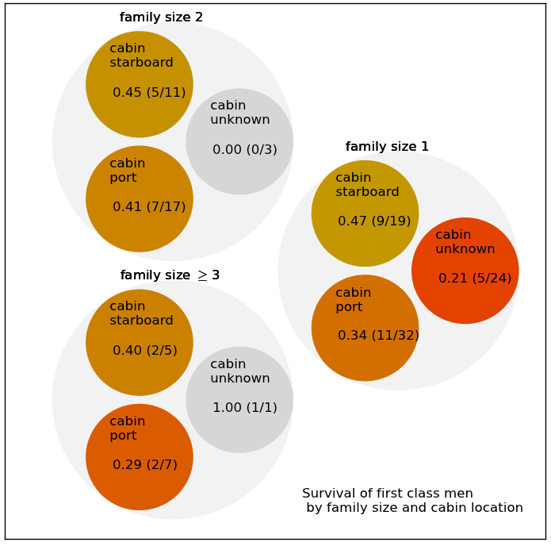
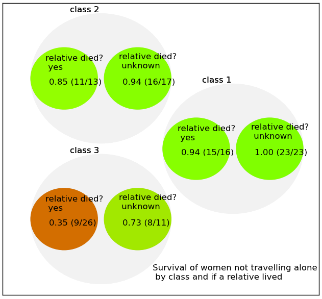

Predicting who survived the sinking of the Titanic
|
We're provided with a "training" data set, which includes whether the passenger died or survived and a "test" data set, for which we need to generate predictions. We know the name (and titles), the class, the cost of the ticket and the gender. In many cases the point of embarkation, the age and the cabin are also given. SibSp is the number of siblings (for a child) or 1 if the passenger has a spouse on board. Parch is the number of parents or children traveling with the passenger.
|
Modeling who survived
| Other folks on Kaggle had some helpful insights about which information was most instructive and how other information could be inferred. For example, the Title (Mr, Mrs, Miss and Master) could be used as a proxy for both gender and age [read]. The sum of SibSp and Parch provides a more compact measure of family size [read]. |
A partial cabin list for first class passengers was found on the body of a steward. Cabin information is mostly missing for second and third class passengers. If cabin information is available for second and third class passengers, then usually a passenger in that cabin survived. (The third class male survival rate for passengers with a known cabin is 0.33 (2/6) and 0.13 (45/341) for those with an unknown cabin.) The "Women and Children" lifeboat policy was enforced differently on the port and starboard sides of the Titanic. On the starboard side men were allowed to board lifeboats if there were no women or children to board, while on the port side only women and children were allowed to board. Does this rule affect the survival of male passengers in First Class? |
 |
|  |
Survival of family members
The training data set constitutes about 2/3 of all the passenger data. Since the survival of individuals is correlated to the survival of family members, knowing which passengers in the training data set survived or died can be used to predict which passengers in the test data survived.
I created two additional variables: "family member survived" [yes, unknown] and "family member died [yes, unknown]. More complicated measures such as "Mr in family survived/died" caused the model to overfit. |
Evaluating the predictive power of different models

|
It's pretty easy to make a simple model which uses the Title, Class and Family size to
predict whether a particular passenger lived or died. It's also pretty easy to make the
model more complicated by including other factors (age, ticket price, embarkation point).
But it's much harder to determine whether a more complicated model is over-fitting the
data.
There are two criteria for comparing different models: the difference between the accuracy (ie the fraction of correct outcomes) in the training and test data, and the variability in the accuracy when the model is created and applied to different subsets of the training and test data. I estimated the accuracy and the variability in the accuracy by using cross validation: fitting the model to a subset of the training data, then testing the model on the remaining data. Randomly sampling different fractions of the training data helps to clarify if the model becomes less powerful as the size of the training sample increases. And comparing the score on the training data to the score on the testing data helps to determine whether the model is over-fitting. |

|
I compared the predictions from four different machine learning tools in the Python
sklearn toolkit: RandomForest (RF), GradientBoostClassifier (GBC), AdaBoost and Support Vector
Machines (SVC).
Models based on title, class, age [unknown, <13, >13], family size, cabin [known, port, starboard] and embarkation point [unknown, Southampton, Cherbourg, Queenstown] overfit the training data: the mean score for the training data is higher than for the testing data. (Fig. 2) The error bars indicate 2σ from the mean score. |

|
Models based on just the title, class and family size don't overfit (Fig. 1), but the standard
deviations are large. Introducing the variables "a family member survived" [true, unknown] and
"a family member died" [true, unknown] reduces the standard deviation in the score
of the predictions for the test data, without making the mean score for the test data
much smaller than for the training data. (Fig. 3)
My best score, 0.82775, lies within 2σ of the mean score obtained testing the model on a subset of the training data. [Check the leaderboard]. Nice! |